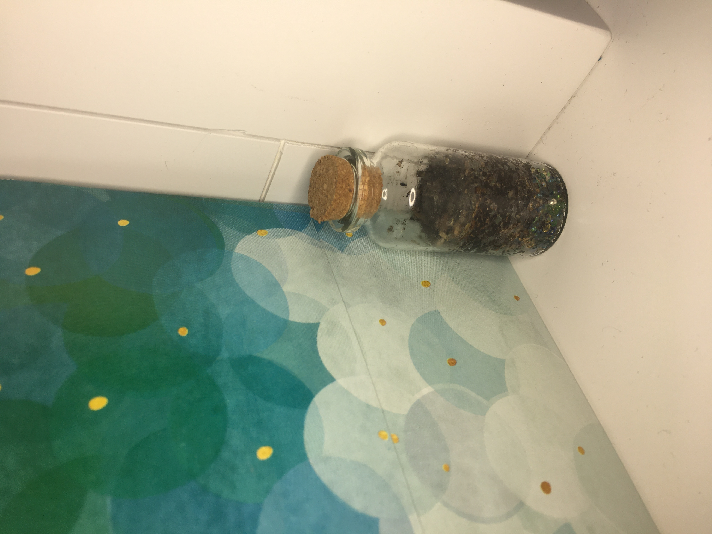

Are you bored during this pandemic and have nothing to do? Well we have a solution! Our product serves as an activity, gift, and cute decor. It is super simple to take care of, and extremely fun to create. This could even become your new hobby, or inspire you to do more! So buy a terrarium now, and make an exciting new discovery. We hope to see you soon and enjoy Plantterarium!
Our product, terrariums, serve as a fun activity, decoration, and gift! We sell kits and premade terrariums in two sizes. They both consist of beads, soil, seeds, and a cute bottle. These are all the materials you need to create your terrarium, as the name suggests. We also have themed choices of beads for you to choose from, so you can customize our product for your liking. Not only is our product fun and personalizable, they are also super easy to take care of because they water themselves! Our product is very unique which sets us apart from our competitors. You won’t find anything like this anywhere else. We hope you enjoy our product!